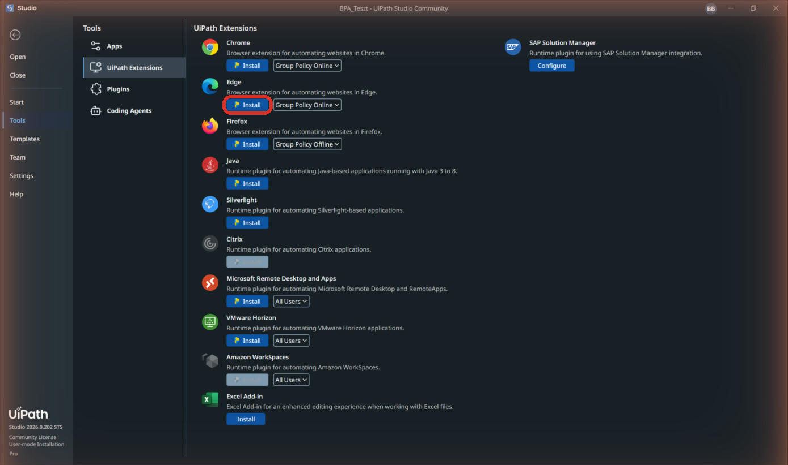
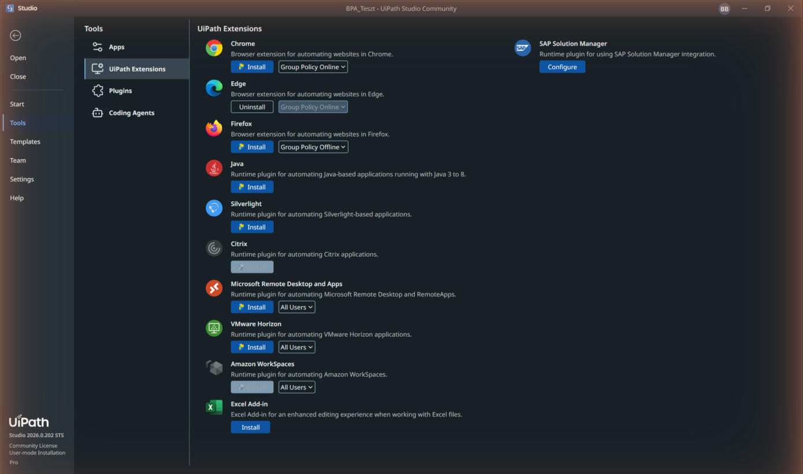
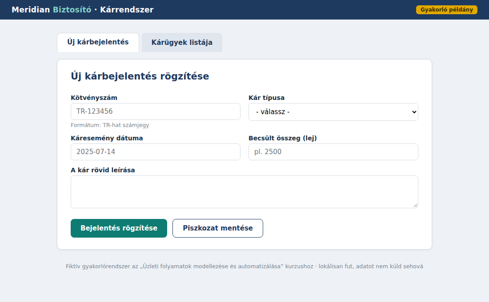
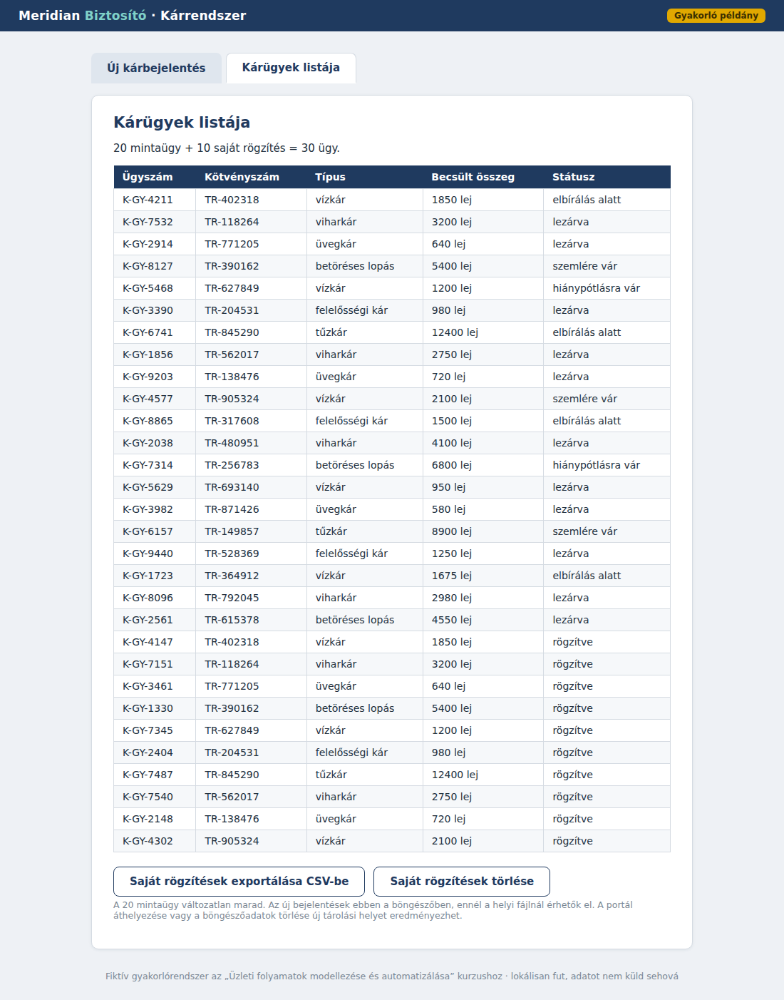

Excelből a webes űrlapba: a klasszikus RPA
A Meridian gyakorlóportálon a robotod Excel-sorokból rögzít kárbejelentéseket: Type Into, Click, For Each Row.
- a robotod egy böngészős űrlapot tölt ki Excelből vett adatokkal;
- láttad a szelektor fogalmát: miről ismeri fel a robot a mezőket;
- előkészültél a hetedik és a nyolcadik napra, ahol ez lesz a főszereplő.
Előkészület: böngésző-bővítmény
A böngészős automatizáláshoz telepítsd a UiPath-bővítményt a használt Edge vagy Chrome böngészőbe: Studio → Home → Tools → UiPath Extensions → megfelelő böngésző → Install. A böngésző bővítménykezelőjében ellenőrizd, hogy aktív. A helyi HTML-hez a bővítmény részleteinél az Allow access to file URLs / Fájl URL-ekhez való hozzáférés is legyen engedélyezve, ha elérhető. Chrome: chrome://extensions; Edge: edge://extensions. Indítsd újra a böngészőt. A telepítés és engedélyezés módja a gép házirendjétől függ.


A gyakorlópálya: a Meridian kárportál
A Meridian kárportál fiktív, helyben futó gyakorlófelület. A hozzá tartozó Excel 10 kárbejelentést tartalmaz. A HTML-t nyisd meg Edge-ben vagy Chrome-ban, és hagyd állandó helyen. A saját bejelentéseket a böngésző helyi tárában őrzi; az alaphelyzethez a listanézetben a Saját rögzítések törlése gombot használd. Nem csatlakozik valódi biztosítóhoz.
- Nyisd meg a gyakorlóportált új lapon. Felhasználónév:
gyakorlo, jelszó:Meridian2026. A Kárügyek listája fülön 20 előre megadott mintaügy van. A Saját rögzítések törlése gomb csak a gyakorlás során hozzáadott ügyeket törli. Válts az Új kárbejelentés fülre.
A tényleges gyakorlóportál öt kitöltendő mezője - Először rögzíts kézzel egy sort az Excelből. Az űrlapon öt mező van: kötvényszám, kártípus, dátum, becsült összeg és leírás. A mentés után a visszaigazoló képernyőre jutsz. A következő sor előtt az Új bejelentés rögzítése gombot is meg kell nyomnod. Ezután töröld a saját próbaügyet a listanézetben, és térj vissza az üres űrlapra.
- Új Windows + Visual Basic Process:
UrlapRobot. A Read Range Workbook olvassa akarbejelentesek_input.xlsxfájlt: SheetName"bejelentesek", Range"", Add headers bekapcsolva; Output:adatok(DataTable). Ellenőrzésüladatok.Rows.Count.ToString()10-et adjon. - A beolvasás után add hozzá a Use Application/Browser aktivitást. Az Indicate application gombbal jelöld ki a bejelentkezett portálfület. A Do területre helyezd a For Each Row in Data Table ciklust: DataTable
adatok, sorváltozóCurrentRow. A már bejelentkezett böngészőt használjuk; ne nyisson minden sornál új ablakot. - A ciklusban négy Type Into és egy Select Item aktivitás töltse ki a mezőket az alábbi táblázat szerint. Minden Type Into célját külön jelöld ki; kapcsold be az Empty field / Clear before typing lehetőséget. A Select Item a kártípus legördülőjéből választ; a szövegnek pontosan egyeznie kell egy lehetőséggel.
- A kitöltés után Click a Bejelentés rögzítése gombra. Várd meg a visszaigazolást: Check App State célja az „A bejelentést rögzítettük” felirat, időkeret például 10 másodperc. Target appears ág: Click az Új bejelentés rögzítése gombra. Target does not appear ág: Throw, Exception:
New Exception("A bejelentés nem mentődött; ellenőrizd a portál hibaüzenetét."). Így hibánál leáll, és nem veszítünk el észrevétlenül egy sort. - Előbb csak az első sort olvasd (
"A1:F2"), és futtasd a robotot. Ha jó, töröld a saját próbaügyet, tedd vissza az üres Read Range tartományt, és futtasd mind a 10 sort. A Piszkozat mentése gombot ebben a feladatban nem használjuk.
Az Excel-oszlopok és az űrlap összerendelése
| Űrlapmező | Aktivitás | Beírandó VB.NET-kifejezés |
|---|---|---|
| Kötvényszám | Type Into | CurrentRow("kotvenyszam").ToString() |
| Kártípus | Select Item | CurrentRow("kartipus").ToString() |
| Káresemény dátuma | Type Into | CurrentRow("karesemeny_datum").ToString() |
| Becsült összeg | Type Into | CurrentRow("becsult_osszeg").ToString() |
| Rövid leírás | Type Into | CurrentRow("karleiras").ToString() |
A mellékletben a dátumok már ÉÉÉÉ-HH-NN alakú szövegek, az összegek egész számok. Az ugyszam oszlop most üres: a portál írja ki az azonosítót. Annak robot általi visszaolvasása és Excelbe írása későbbi bővítés lehet.
A Kárügyek listája fülön 20 mintaügy és 10 saját rögzítés, összesen 30 sor szerepeljen. Ellenőrizd az első és az utolsó Excel-kötvényszámot, összeget és kártípust is. Az ügyszámok K-GY kezdetűek. A saját rögzítéseket a listából CSV-be is exportálhatod.

Ha mást látsz: ha a Type Into rossz mezőbe ír, a kijelölt cél (szelektor) csúszott el: az aktivitáson jelöld ki újra a célt (Indicate target).
A szelektor az oldal elemeinek tulajdonságaiból azonosítja a célt; más módszerek kép- vagy szövegfelismerést is használhatnak. Ennél az űrlapnál stabil elem-id segíti a kijelölést. A Piszkozat gomb szándékosan változó id-t kap; ezt később külön vizsgáljuk.
- A böngésző-bővítmény nincs telepítve vagy engedélyezve: az Indicate nem jelöli ki a mező-elemeket, csak az egész ablakot; végezd el az előkészület lépését, és indítsd újra a böngészőt.
- Ebben az útmutatóban a ciklus a Use Application/Browser Do területén legyen, és az összes kitöltő/mentő aktivitás a ciklus testében. Más szerkezet is lehetséges, de kezdésként kövesd ezt a hatókört.
- A portál-fájlt áthelyezted futtatás előtt: az Indicate-elt cél elveszik; hagyd a BPA_kurzus mappában, és onnan nyisd meg.
- Bármely belső rendszerbe való tömeges adatrögzítés: HR-rendszer, számlázó, ERP.
- Régi (API nélküli) rendszerek: pont itt pótolhatatlan az RPA; ahol van API, ott a harmadik napi út az elegánsabb.
- A hetedik és a nyolcadik napon: számlából adat, e-mailből adat, webtáblából adat: mind ugyanez a minta.